论文翻译及理解：Object Contextual Representations for Semantic Segmentation
基于语义分割的目标上下文表示
摘要
在本文中，我们研究了语义分割中的上下文聚合问题。由于像素的标签是像素所属的对象的类别，我们提出了一种简单而有效的方法，即目标上下文表示，通过利用相应目标类别表示来表示像素的特征。首先，我们在分割标注集的监督下学习目标区域。然后，我们通过聚集位于目标区域中的像素表示来计算目标区域表示。最后，我们计算每个像素与每个目标区域之间的关系，并用目标上下文表示来增加每个像素的表示，目标上下文表示是所有对象区域表示的加权聚集。我们从经验上证明了我们的方法在各种基准上均具有竞争性性能：Cityscapes，ADE20K，LIP，PASCAL-Context和COCO-Stu ff。我们提交的“ HRNet + OCR + SegFix”在ECCV 2020提交截止日期之前在Cityscapes排行榜上排名第一。可以从以下网址获得代码：https://git.io/openseg 和 https://git.io/HRNet.OCR。
1 引言
语义分割是为图像的每个像素分配类别标签的问题。它是计算机视觉中的基本问题，对于诸如自动驾驶之类的各种实际任务至关重要。自FCN问世以来，深度卷积网络一直是其主要解决方案。已经进行了各种研究，包括高分辨率表示学习，上下文聚合等。上下文聚合是本文的研究重点。
一个位置的上下文通常是指一组位置，例如，周围的像素。早期的研究主要是关于语境的空间尺度，即空间范围。代表作品，例如ASPP和PPM，利用了多尺度背景。近来，诸如DANet，CFNet和OCNet之类的几篇著作考虑了位置及其上下文位置之间的关系，并以相似的表示权重汇总了具有较高权重的上下文位置表示。
我们建议沿着探索位置和它的上下文之间的关系的路线来研究上下文表示方法。其动机是，分配给一个像素的类标签是该像素所属的目标类别。我们的目标是通过利用相应类的对象区域的表示来增加一个像素的表示。如图1所示的实证研究表明，当给定标注的目标区域时，该表示增强方法显著提高了分割质量。
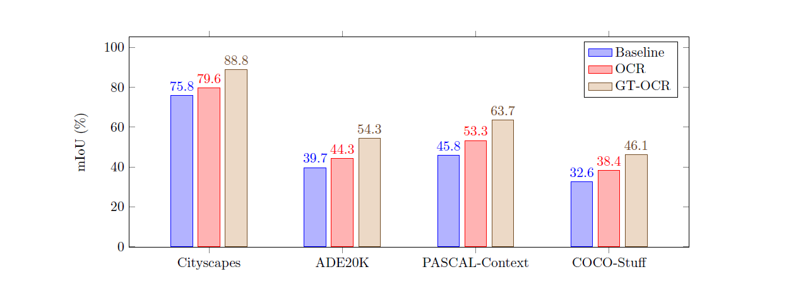
我们的方法包括三个主要步骤。首先，我们将上下文像素划分为一组软对象区域，每个软对象区域对应于一个类别，即从深层网络（例如ResNet或HRNet）计算出的粗略软分割。这种划分是在标注分割的监督下学习的。其次，我们通过聚合对应目标区域中像素的表示来估计每个对象区域的表示;最后，我们使用对象上下文表示（OCR）来扩大每个像素的表示。 OCR是所有对象区域表示的加权聚合，其加权是根据像素和对象区域之间的关系计算的。
我们提出的OCR方法与常规的多尺度上下文方法不同。 我们的OCR将不同对象类别的上下文像素与相同对象类别的上下文像素区分开，而诸如ASPP和PPM等多尺度上下文方法则不会，仅使用不同的空间位置。 图2提供了一个示例来说明我们的OCR上下文和多尺度上下文之间的差异。 另一方面，我们的OCR方法也不同于先前的关系上下文方法。 我们的方法将上下文像素构造为对象区域，并利用像素和对象区域之间的关系。 相反，先前的关系上下文方法单独地考虑上下文像素，仅利用像素与上下文像素之间的关系或仅从像素预测关系而不考虑区域。
我们对各种具有挑战性的语义分割基准进行评估。我们的方法优于PSPNet，DeepLabv3等多尺度上下文方法和最近的DANet等关系上下文方法，并且效率也得到了提高。我们的方法在五个基准上获得了好的成绩：Cityscapestest为84.5％，ADE20Kval为45.66％，LIPval为56.65％，PASCAL-Contexttest为56.2％，COCO-Stufftest为40.5％。此外，我们将方法扩展到了Panoptic-FPN，并验证了OCR在COCO全景分割任务中的有效性，例如，Panoptic-FPN + OCR在COCOval上达到44.2％。
2 相关工作
多尺度上下文。 PSPNet 对金字塔池表示进行常规卷积以捕获多尺度上下文。 DeepLab系列采用具有不同扩张率的平行扩张卷积（每种速率捕获不同规模的背景）。最近的工作提出了各种扩展，例如DenseASPP将扩张的速率压缩到更大的范围。其他一些研究构造了编码器-解码器结构以利用多分辨率特征作为多尺度上下文。
关系上下文。 DANet [16]，CFNet [76]和OCNet [71]通过聚合上下文像素的表示来增强每个像素的表示，其中上下文由所有像素组成。与全局上下文[46]不同，这些工作考虑了像素之间的关系（或相似性），这是基于自关注方法[63,61]的，并以相似性作为权重进行加权聚合。
它的相关工作[8,74,9,40,38,73,34,24]和ACFNet [74]将像素分组为一组区域，然后通过考虑区域关联来汇总区域表示，从而增加像素表示通过使用像素表示来预测。
我们的方法是一种关系上下文方法，并且与Double Atten-tion和ACFNet有关。 区别在于区域形成和像素-区域关系计算。 我们的方法是在地面真伪分割的监督下学习区域的。 相反，除ACFNet以外，以前方法中的区域是无监督地形成的。 另一方面，通过考虑像素和区域表示两者来计算像素与区域之间的关系，而先前作品中的关系仅根据像素表示来计算。
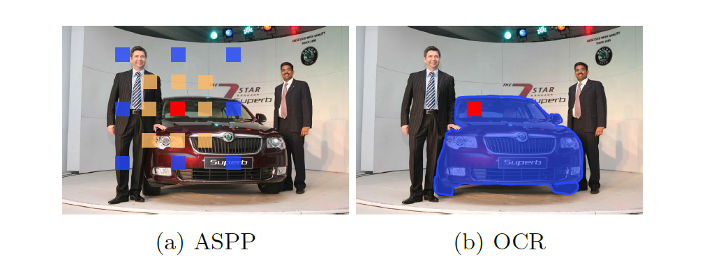
粗粒度至细粒度的分割。 已经开发了各种从粗到细的分割方法，可以逐步由粗到细地修正分割图。例如，将粗分割图视为一种附加表示，并将其与原始图像或其他表示相结合以计算细分割图。
在某种意义上，我们的方法也可以视为粗细映射方法。在于我们使用粗糙分割图来生成上下文表示，而不是直接用作额外表示。我们将我们的方法与补充材料中的常规“粗到细”方法进行了比较。
区域分割。 有许多区域分割方法，它们将像素组织为一组区域（通常是超像素），然后对每个区域进行分类以获得图像分割结果。我们的方法没有对每个区域进行分割，而是使用该区域来学习像素的更好表示，从而获得更好的像素标记。
3 方法
语义分割是指将图片$I$中的每个像素$l_i$分配一个标签$l_i$，$l_i$是$K$个类别中的一个标签。
3.1 背景
多尺度上下文。 ASPP模块通过执行多个不同空洞间隔度[5, 6, 70]的并行空洞卷积来捕获多尺度上下文信息。
在这里，$p_s = p_i + d\Delta_t$是空洞间隔度为d的空洞卷积在$p_i$位置上的第$d$个采样位置（例如再deeplab3中，$d = 12, 24, 36$）。 $t$是卷积的位置索引，例如，对于$3 \times 3$卷积，{$\Delta t =（\Delta w，\Delta h）| \Delta w = -1，0，1，\delta h = −1，0，1$}。 $x_s$是在$p_s$的表示。 ${y_i^d}$是$d$th扩展卷积在$p_i$处的输出表示。 $K_t^d$是位于的内核参数$d$th扩展卷积的位置$t$。 输出的多尺度上下文表示是由并行空洞卷积表示输出的串联。
基于空洞卷积的多尺度上下文方法在不损失分辨率的情况下捕获了多个尺度的上下文。 PSPNet中的金字塔池化模块对不同尺度表示执行一般卷积，并且还捕获了多个尺度的上下文，但是对于大规模上下文却失去了分辨率。
关系上下文。 关系上下文方法[16,71,76]通过考虑关系（公式2）来计算每个像素的上下文
其中，$\mathcal{I}$指图像中的像素集，$w_{is}$是$w_i$和$w_s$之间的关系，并且只能根据$w_i$或者从$w_i$和$w_s$计算得到的值进行预测。$\delta(\cdot)$和$\rho(\cdot)$是两个不同的变换函数，就像在自注意力机制中所做的那样。全局上下文方法是关系上下文的特例，其$w_is = \frac{1}{|\mathcal{I}|}$。
3.2 公式
像素$p_i$的类别标签$l_i$类实际上是像素$p_i$所属目标的标签。因此，我们提出了一种目标上下文表示方法，通过利用相应的目标表示来表征每个像素。
提出的对象上下文表示方法（1）将图像$I$中的所有像素结构化为$K$个软对象区域,（2）通过聚合第k个对象区域中所有像素的表示，将每个目标区域表示为$f_k$；以及（3）考虑到像素与所有目标区域的关系，通过聚合K个目标区域表示来增强每个像素的表示：
在这里，$x_i$是像素$p_i$的表示。 $m_{ki}$是对属于第$k$个对象区域的像素$p_i$的归一化程度。我们使用空间softmax对每个对象区域$M_k$进行归一化。
目标上下文表示。 我们计算了每个像素和每个目标区域之间的关系，其关系表示如下：
此处，$k(x, f) = \phi(x)^T \psi(f)$是未归一化的关系函数 $\phi(\cdot)$ 和 $\psi(\cdot)$ 是通过1×1 conv→BN→ReLU实现的两个变换函数。这是受到自注意力机制[61]的启发，可以进行更好的关系估计。
像素$p_i$的对象上下文表示$y_i$是根据等式3计算的。在该等式中，$\phi(\cdot)$和$\psi(\cdot)$都是由1×1 conv→BN→ReLU实现的变换函数，并且遵循非局部网络[63]。
增强表示。 像素$p_i$的最终表示被更新为两部分的集合，（1）原始表示$x_i$，（2）对象上下文表示$y_i$：
其中$g(\cdot)$是用于融合原始表示和对象上下文表示的转换函数，由1×1 conv→BN→ReLU实现。
我们的方法的整个流程如图3所示。
评论：最近的一些研究，例如Double Attention [8]和ACFNet [74]，
可以类似于方程式3来表述，但是在某些方面与我们的方法不同。例如，在“双注意”中形成的区域不对应
到对象类，并且仅使用对象区域表示从像素表示w / o计算ACFNet [74]中的关系。
3.3 结构
骨干网络. 我们使用空洞的ResNet-101 [23]（输出步长为8）或HRNet-W48 [55]（输出步长为4）作为骨干网络。对于空洞卷积的ResNet-101，
是输入到OCR模块的两种表示形式。第3阶段的第一个表示用于预测粗略分割（对象区域）。第4阶段的另一个表示形式是3×3卷积（512个输出通道），
然后送入OCR模块。对于HRNet-W48，我们仅将最终表示形式用作OCR模块的输入。
OCR模块。 我们将上述方法的公式表示为OCR模块，如图3所示。我们使用线性函数（1×1卷积）来预测由像素方式监督的粗略分割（软对象区域）交叉熵损失。所有变换函数ψ（·），φ（·），δ（·），ρ（·）和g（·）被实现为1×1 conv→BN→ReLU，并且前三个输出为256通道最后两个输出512通道。我们预测最终的细分
使用线性函数从最终表示中分离出来，我们还对最终的分割预测应用了像素级的交叉熵损失。
3.4 经验性分析
我们使用空洞卷积的ResNet-101作为网络在Cityscapess vals数据集进行实证分析实验。
目标区域监督。 我们研究了目标区域监督的影响。我们通过消除对软对象区域（图3中粉红色虚线框内）的监督（即损失）并在ResNet-101的第3阶段中添加另一个辅助损失来修改我们的方法。我们将所有其他设置保持不变，并在表1的最左侧2列中报告结果。我们可以看到，形成目标区域的监督对于性能至关重要。
像素与区域关系。 我们将我们的方法与其他两种不使用区域表示来估计像素区域关系的机制进行了比较：
（i）Double-Attention [8]使用像素表示来预测关系；
（ii）ACFNet [74]直接使用一个中间分割图来表示关系。我们使用DA方案和ACF方案来表示以上两种机制。我们自己实现这两种方法，并且仅使用空洞卷积z的ResNet-101作为主干，而不使用多尺度上下文（使用ASPP [74]改善了ACFNet的结果）。
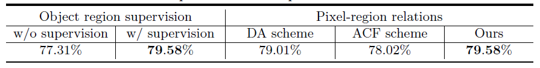
表1中的比较表明，我们的方法具有出色的性能。原因是我们利用像素表示以及区域表示来计算关系。区域表示能够表征特定图像中的对象，因此，与仅使用像素表示相比，该关系对于特定图像更准确。
OCR的ground-truth 我们使用ground-truth分割来形成物体区域和像素区域关系（称为GT-OCR）来研究分割性能，以证明我们的动机。（i）使用groudn-truth形成物体区域：如果groudn-truth标记$l_i \equiv 1$和$m_{ki} = 0$，则设置属于第k个物体区域的像素i的置信度$m_{ki} = 1$。 （ii）使用ground-truth像素区域关系计算：如果ground-truth标签$l_{i} = 1$设置像素-区域关系$w_{ik} = 1$，否则设置$w_{ik} = 0$。我们在图1中以四个不同的基准说明了GT-OCR的详细结果。
4 实验：语义分割
4.1 数据集
CityScapes. Cityscapes数据集[11]的任务是了解城市景观。共有30个类别，只有19个类别用于解析评估。数据集包含5K高质量像素级别的带注释的图像和20K粗糙带注释的图像。细粒度标注的5K图像分为2,975/500/1,525张图像，分别用于训练，验证和测试。
ADE20K. ADE20K数据集[81]用于ImageNet场景解析挑战2016。其共有1038个图像级别的标注，包含150个类别和多种场景。数据集被分为20K/2K/ 3K图像，分别用于训练，验证和测试。
LIP. LIP数据集[19]用于单人解析任务的LIP挑战2016。大约有50K图像，其中包含20个类别（19个语义人体部位类别和1个背景类别）。训练，验证和测试集分别由30K，10K和10K图像组成。
PASCAL_Context. PASCAL-Context数据集[49]是一个具有挑战性的场景解析数据集，包含59个语义类和1个背景类。训练集和测试集分别包含4,998和5,105张图像。
COCO-Stuff. COCO-Stuff数据集[3]是一个具有挑战性的场景解析数据集，包含171个语义类。训练集和测试集分别由9K和1K图像组成。
4.2 实现细节
训练设置 我们使用在ImageNet和OCR模块上随机训练的模型初始化骨干。 我们执行多项式学习率策略，系数为$(1 - (\frac{iter}{iter_{max}})^{0.9})$，最终损失的权重为1，用于监督目标区域估计（或称为辅助损失）的损失的权重为0.4。 我们使用$I_NP_{LACE}-ABN^{sync}$ [53]在多个GPU之间同步BN的均值和标准差。 对于数据增强，我们在水平方向执行随机翻转，在[0.5, 2]范围内执行随机缩放，在[-10, 10]范围内执行随机亮度抖动。 我们对复制的方法（例如PPM，ASPP）执行相同的训练设置，以确保公平。 我们遵循先前的工作[6,75,79]为基准数据集设置训练。
Cityscapes: 默认情况下，我们将初始学习率设置为0.01，重量衰减设置为0.0005，裁剪大小设置为769×769，batch size设置为8。对于在验证集或测试集上评估的实验，我们分别在train / train+val set上将训练迭代次数设置为40K/100K。对于增加了额外数据的实验：（i）w/coarse，我们首先在train+val上训练模型以初始学习率为0.01进行100K迭代。然后在coarse set上对模型进行微调，共进行50K迭代，再然后继续优化在train+val set上以相同的初始学习速率0.001对我们的模型进行20K迭代。 （ii）w /coarse+ Mapillary [50]，我们首先在Mapillary train set中对模型进行预训练，迭代次数500K，batch size大小为16，初始学习率为0.01（在Mapillary val上达到50.8％），然后进行在Cityscapes上微调，顺序为Train+val(100k迭代)—>coarse(50K迭代)—>train+val(20K迭代)，我们设置初始学习率为0.001，batch size为 8（在Cityscapes数据集上的三次微调阶段）。
ADE20K： 如果未指定，我们将初始学习速率设置为0.02，权重衰减设置为0.0001，裁剪尺寸设置为520×520，batch size设置为16，迭代次数设置为150K。
LIP： 如果未指定，我们将初始学习速率设置为0.007，权重衰减设置为0.0005，裁剪大小设置为473×473，batch size设置为32，训练迭代次数设置为100K。
PASCAL-Context: 如果未指定，我们将初始学习率设置为0.001，权重衰减设置为0.0001，裁剪大小设置为520×520，batch size设置为16，训练迭代次数设置为30K。
COCO-Stuff： 如果未指定，我们将初始学习率设置为0.001，权重衰减设置为0.0001，裁剪大小设置为520×520，batch size设置为16，训练迭代次数设置为60K。
4.3 与现有上下文的比较
我们使用空洞卷积的ResNet-101作为骨干网络进行实验，并使用相同的训练/测试设置来确保公平。
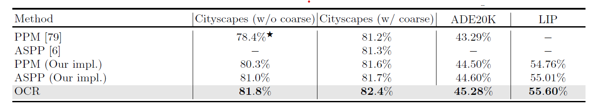
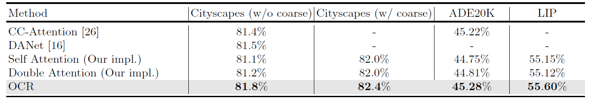
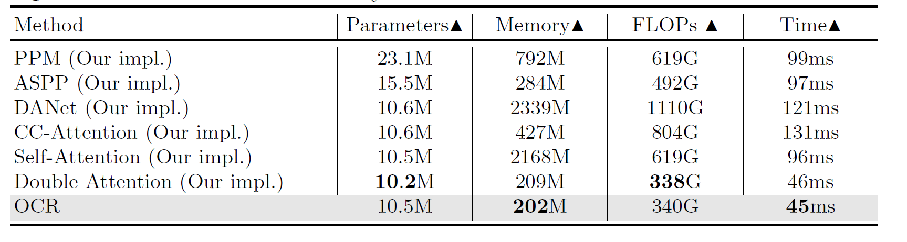
多尺度上下文。 我们将OCR与包含PPM [79]和ASPP [6]的多尺度上下文方法进行了比较，这三个基准包括表2中的Cityscapes test，ADE20K val和LIP val。我们复现的PPM / ASPP优于[79, 6]中的原始数据。 从表2中可以看出，我们的OCR大大优于两个多尺度上下文方案。 例如，四个比较的OCR相对于PPM（ASPP）的绝对收益为1.5％（0.8％），0.8％（0.7％），0.78％（0.68％），0.84％（0.5％）。 据我们所知，考虑到基线（使用已扩展的ResNet-101）已经很强并且OCR的复杂性要小得多，这些改进已经非常重要。
关系上下文。 我们在包括Cityscapes test，ADE20K VAL和LIP VAL在内的三个基准测试中，将OCR与各种关系上下文方案进行了比较，包括自我注意力机制[61,63]，纵横交叉注意力机制[26]（CC-注意力机制），DANet [16]和双重注意力机制[8]。 对于复现的Double Attention，我们微调了区域的数量（因为它对超参数选择非常敏感），并且我们选择了性能最佳的64。 补充材料中说明了更详细的分析和比较。 根据表3中的结果，可以看出，在公平比较的情况下，我们的OCR优于这些关系上下文方法。 值得注意的是，我们的OCR的复杂度比大多数其他方法要小得多。
复杂度。 我们将OCR的效率与多尺度上下文方法和关系上下文方法的效率进行了比较。我们测量由上下文模块引入的增加的参数，GPU内存，计算复杂度（由FLOP的数量来衡量）和推理时间，而不计算主干网的复杂度。表4中的比较显示了所提出的OCR方法的优越性。
参数：与多尺度上下文方法相比，大多数关系上下文方法需要较少的参数。例如，我们的OCR仅分别需要PPM和ASPP的参数的1/2和2/3。
内存：与其他方法（例如DANet，PPM）相比，我们的OCR和Double Attention都需要更少的GPU内存。例如，我们的GPU内存消耗分别是PPM，DANet，CC-Attention和Self-Attention的内存消耗的1 / 4、1 / 10、1 / 2、1 / 10。
FLOP：我们的OCR仅需要分别基于PPM，ASPP，DANet，CC注意和自我注意的FLOP的1 / 2、7 / 10、3 / 10、2 / 5和1/2。
运行时间：OCR的运行时间非常小：分别具有PPM，ASPP，DANet，CC注意和自我注意的运行时间仅为运行时间的1 / 2、1 / 2、1 / 3、1 / 3和1/2。一般而言，如果我们考虑性能，内存复杂性，GFLOP和运行时间之间的平衡，则OCR是一个更好的选择。
4.4 与state-of-the-art比较
考虑到不同的方法可以在不同的基准上进行改进以达到最佳性能，因此，我们根据现有基准将其分为两类：（i）简单基准：采用步长为8的空洞卷积ResNet-101；（ii）先进的基线：PSPNet，DeepLabv3，多网格（MG），编码器-解码器结构，可通过第4步或更强的主干（例如WideResNet-38，Xception-71和HRNet）实现更高分辨率的输出。
为了公平地与两个小组进行公平比较，我们在简单的基线（空洞卷积ResNet-101，步幅为8）和高级基线（HRNet-W48，步幅为4）上执行OCR。值得注意的是，我们对HRNet-W48（相对于ResNet-101）的改进与其他基于高级基准方法的工作的改进相当。例如，在Cityscapes test中，使用Multi-grid的DGCNet [77]获得0.7％的收益，而使用更强大的骨干网的OCR获得0.6％的收益。我们总结了表5中的所有结果，并分别说明了每个基准的比较细节，如下所示。
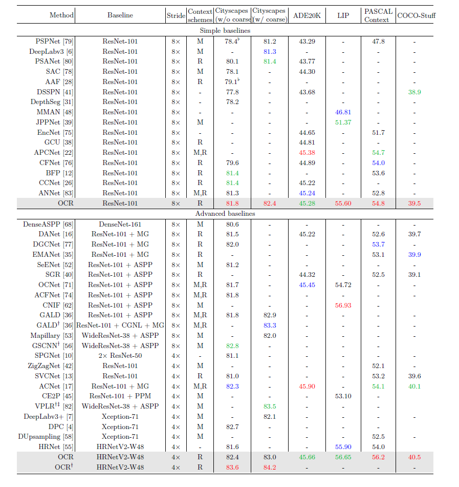
citysapes。 与不使用粗粒度数据的基于Cityscape test的简单基准线的方法相比，我们的方法可达到81.8％的最佳性能，这已经可以与基于高级基准线的某些方法（例如DANet，ACFNet）相提并论。我们的方法通过利用粗粒度标注的图像进行训练，可达到82.4％的更好性能。
为了与基于高级基准的方法进行比较，我们在HRNet-W48上进行了OCR，并进行了预训练我们在Mapillary数据集上的模型[50]。我们的方法在Cityscapes测试中达到84.2％。我们进一步应用了一种新颖的后处理方案SegFix [72]来完善边界质量，从而带来0.3％的改善。我们最终提交的“ HRNet + OCR + SegFix”达到84.5％，在我们提交时，它在Cityscapes排行榜上排名第一。实际上，我们在HRNet-W48上分别执行PPM和ASPP，凭经验发现，直接应用PPM或ASPP不会提高性能，甚至会降低性能，而我们的OCR会持续提高性能。
值得注意的是，最近的工作[57]通过结合我们的“ HRNet + OCR”和新的分层多尺度关注机制，在Cityscapes排行榜上设定了85.4％的最新性能。
ADE20K。 从表5中可以看出，与以前基于简单基准和高级基准的大多数方法相比，我们的OCR达到了有竞争力的成绩（分别为45.28％和45.66％）。例如，ACFNet [22]利用多尺度上下文和关系上下文来实现更高的性能。最新的ACNet [17]通过结合更丰富的本地和全球环境来实现最佳性能。
LIP。 基于简单的基准，我们的方法在LIP val上可实现55.60％的最佳性能。应用更强的主干HRNetV2-W48可以将性能进一步提高到56.65％，这比以前的方法要好。 CNIF [62]的最新工作是通过注入人体部位的层次结构知识来实现最佳性能（56.93％）。我们的方法可能会受益于这种层次结构知识。所有结果均基于仅flip测试，而不是多尺度测试。
PASCAL-Context。 我们根据[55]评估了59个类别的效果。可以看出，我们的方法优于基于简单基准的先前最佳方法和基于高级基准的先前最佳方法。 HRNet-W48 + OCR方法可实现56.2％的最佳性能，明显优于第二佳的性能，例如ACPNet（54.7％）和ACNet（54.1％）。
COCO-Stuff。 可以看出，我们的方法实现了最佳性能，基于ResNet-101的39.5％和基于HRNetV2-48的40.5％。
定性结果。 由于篇幅有限，我们在补充材料中说明了定性结果。
5 实验：全景分割
为了验证该方法的泛化能力，我们将OCR方案应用于更具挑战性的全景分割任务。全景分割任务连结了实例分割和语义分割。
数据集。我们选择COCO数据集来研究我们的方法对全景图像分割的有效性。我们遵循之前的工作，使用了所有2017年的COCO数据集图片，并标注了80个thing和53个stuff类。
训练细节。我们遵循在Detectron2平台中默认的训练设置“COCO-panopoptic Segmentation Baselines with panopoptic FPN（3倍学习率）”。我们使用论文中的原始参数（Panoptic FPN w/ResNet-50，PQ:39.2%/Panoptic FPN w/ResNet-101，PQ:40.3%）复现Panoptic FPN模型具有更高的性能，我们选择了更高的再现结果作为基线。
在我们的实现中，我们使用来自语义分割头（在Panoptic FPN中）的原始预测来计算软对象区域，然后使用OCR头来预测定义的语义分割图。我们将原始语义分割头和OCR头的损失权重都设置为0.25。所有其他培训设置保持不变，以便公平比较。我们直接使用相同的OCR实现（用于语义分割任务），而无需任何调整。
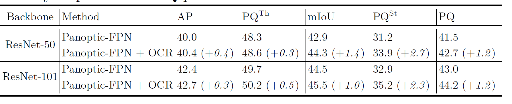
结果。在表6中，我们可以看到OCR将Panoptic FPN（ResNet-101）的PQ性能从43.0%提高到44.2%，其中主要的改进来自于mIoU和PQSt测量的stuff区域上更好的分割质量。具体而言，我们的OCR将Panoptic FPN（ResNet-101）的mIoU和PQSt分别提高了1.0%和2.3%。总的来说，“Panoptic FPN+OCR”的性能与最近的各种方法相比非常有竞争力[66,44,69]。在补充材料中我们还报告了Panoptic FPN与PPM和ASPP的结果，以说明我们的OCR的优势。
6 总结
在这项工作中，我们提出了一个对象上下文表示方法的语义分割。该方法成功的主要原因是像素的标签是该像素所在对象的标签，并且通过用相应的对象区域表示对每个像素进行特征化来增强像素表示。我们的经验表明，我们的方法带来了各种基准的一致性改进。
鸣谢。 本工作得到了国家自然科学基金项目61390511号合同和中国科学院前沿科学重点研究项目QYZDJ-SSW-JSC009的部分资助。
7 补充材料
在A部分，我们将我们的方法与现有的粗粒度-细粒度方法进行比较。在B部分中，我们研究了区域数的影响，并用双注意的方法说明了定性结果。在C部分中，我们展示了COCO val 2017上的Panoptic FPN+PPM/ASPP结果以及COCO test-dev 的Panoptic FPN/Panoptic FPN+OCR的结果。在D部分中，我们将OCR应用于MobileNetV2，以验证我们的方法在实时应用中的有效性。在E部分中，我们基于最近的MMSEGECTION代码基验证了OCR相对于传统的DeepLabv3和DeepLabv3+的优势。最后，在F部分中，我们举例说明了基于OCR方案的定性改进。
A. 与粗粒度至细粒度方案的比较
许多现有的研究已经利用了各种从粗到细的方法来使用粗分割结果来提高最终的分割结果。我们主要比较OCR和两种流行的机制，包括：
标签映射：将输入图像或特征映射与粗略预测相结合，以预测重新定义的标签映射。我们将粗分割图与ResNet-101 Stage 4输出的特征图连接起来，并在连接的特征图上应用最终分类器来预测重新定义的分割图。
标签集成：将粗分割图与细分割图直接集成。我们直接使用粗分割图和细分割图的加权和作为最终的精确预测。
此外，我们还展示了仅使用粗分割图（从ResNet第3阶段预测）和仅使用细分割图（从ResNet第4阶段预测）的性能。我们选择扩张的ResNet-101作为基线。根据表7中的结果，可以看出，我们的OCR比所有其他粗到细方法都有很大的优势。
B. 双注意力机制的消融研究
区域数量。我们定义了双注意力方法中的区域数量，并在表8中展示了cityscapes val的结果。如果未指定，我们选择K=64。此外，可以看出，双注意力的表现对区域数的选择很敏感，我们的方法（固定区域数）始终优于不同区域数的双注意力方法。
定性结果，我们将双注意预测区域和OCR预测的目标区域可视化如图4所示，可见OCR预测的目标区域都对应于明确的语义，如道路、人行道和汽车类别，而具有双重注意的预测区域主要突出没有特定语义的轮廓像素，这可能是我们方法的主要优势。
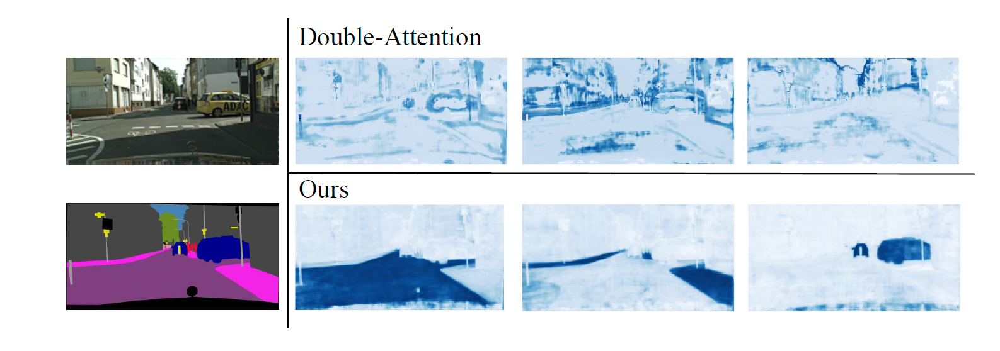
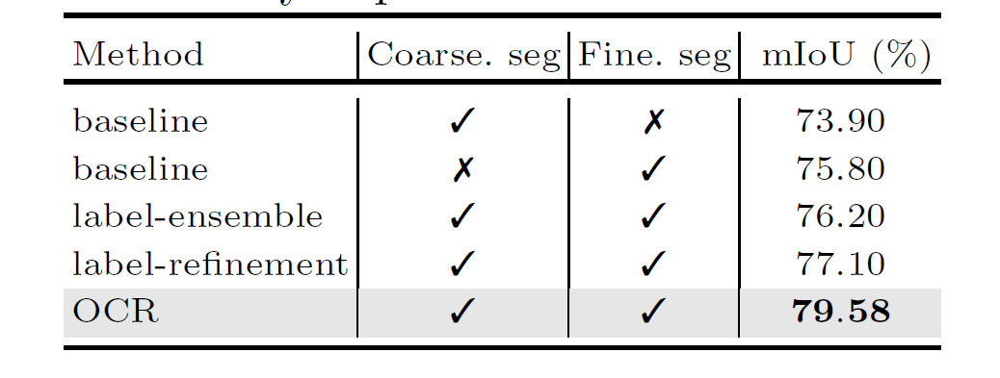
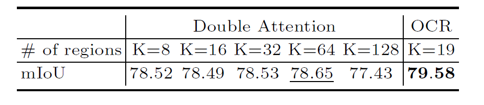
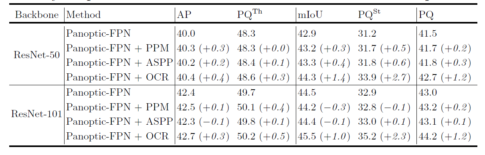
C. 更多的全景分割结果
首先，我们直接将PPM或ASPP head应用于Panoptic FPN中的语义分割head之前，无需任何其他修改。在表9中，我们报告了这两种方法的结果，我们可以发现我们的OCR优于基于Panoptic FPN的PPM head和APP head。值得注意的是，如本文所示，我们的OCR也比PPM和ASPP更有效。其次，我们也在表10中报告了基于OCR的在COCO test-dev的结果。我们可以看到，OCR在COCO-val集和test-dev集上都持续改进了结果。
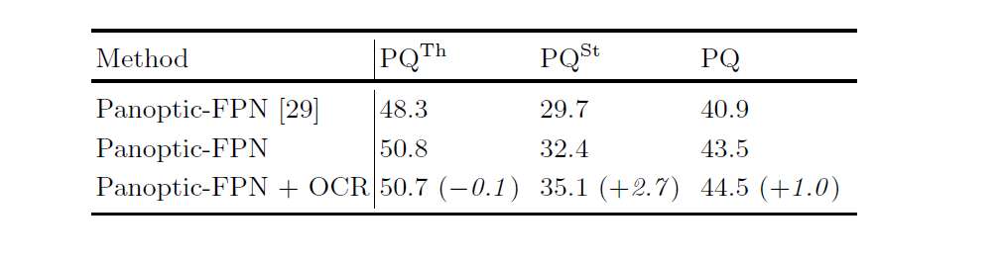
D. 应用于MobileNet V2
我们在MobileNetV2上应用OCR，并在表5中展示性能。具体来说，我们按照相同的训练设置训练MobileNetV2，期望将批大小更改为16，训练迭代次数更改为100K。可以看出，OCR显著提高了cityscapes val的分割性能，同时略微增加了推断时间（或更小的FPS）
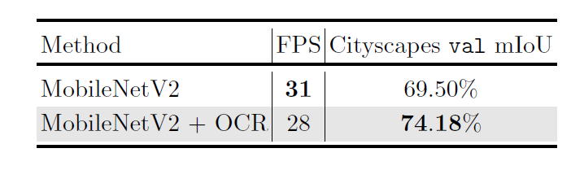
E. MMSegmentation 结果
为了验证我们的OCR方法在不同的代码库中具有良好的通用性，我们进一步比较了OCR、DeepLabv3和DeepLabv3+基于最新代码库MMSegmentation的分割结果。具体来说，我们在两种不同的训练迭代计划下评估不同的方法：（i）40K迭代，（ii）80K迭代。我们将两个训练计划的初始学习率设置为0.02，批大小设置为16。我们选择裁剪尺寸为1024× 512和主干作为扩展的ResNet-101，所有方法的输出步长默认为8，以确保比较的公平性。
我们在表11中报告了GPU内存消耗（用于训练）、推理速度（用于测试）和mIoUs（在Cityscapes验证集上）。我们可以看到，在这两种训练设置下，OCR与DeepLabv3和DeepLabv3+相比取得了更好或可比的性能。特别是，我们的OCR需要更少的GPU内存消耗，并在Cityscapes基准上实现更高的FPS。
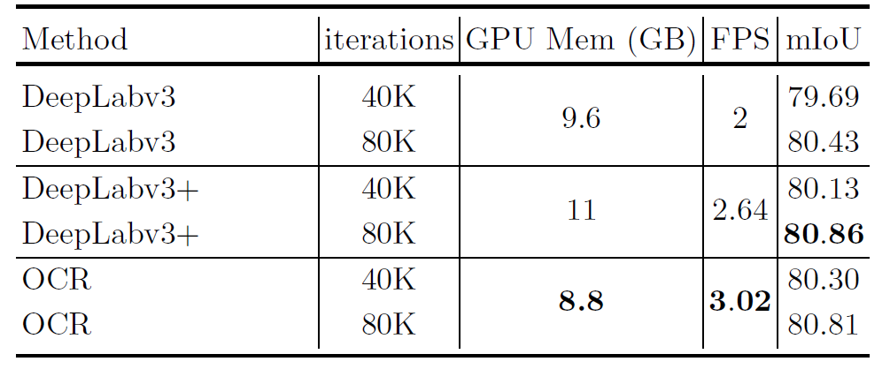
F. 性能改进
我们在图6中说明了我们的方法在不同基准上的定性改进。我们使用白色虚线框来标记硬区域，这些硬区域被我们的方法很好地分类，但被基线错误地分类。
转载请注明来源，欢迎对文章中的引用来源进行考证，欢迎指出任何有错误或不够清晰的表达。可以在下面评论区评论，也可以邮件至 525244039@qq.com
文章标题:论文翻译及理解：Object Contextual Representations for Semantic Segmentation
文章字数:8.7k
本文作者:Zikun
发布时间:2021-01-15, 16:47:34
最后更新:2021-01-15, 16:47:34
原始链接:http://zikun97.github.io/2021/01/15/%E8%AE%BA%E6%96%87%E7%BF%BB%E8%AF%91%E5%8F%8A%E7%90%86%E8%A7%A3%EF%BC%9AObject-Contextual-Representations-for-Semantic-Segmentation/版权声明: "署名-非商用-相同方式共享 4.0" 转载请保留原文链接及作者。